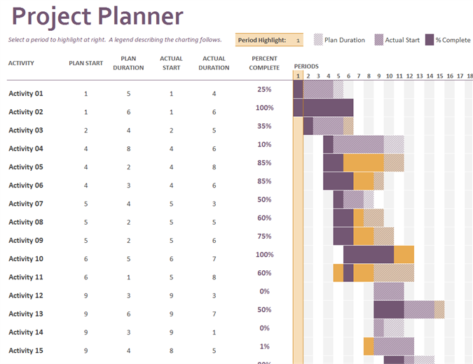
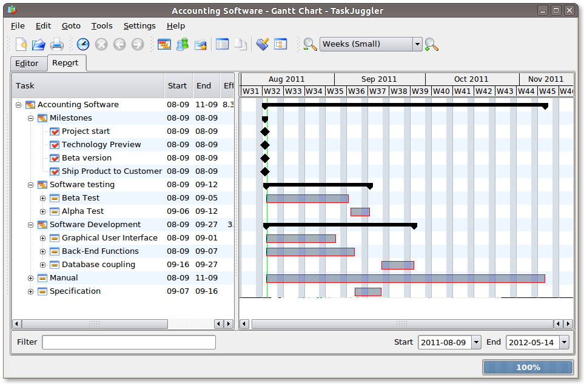

Gestión de Proyectos
Gestión de proyectos es un enfoque metódico para planificar y orientar los procesos del proyecto de principio a fin. Según el Instituto de Gestión de Proyectos (Project Management Institute, PMI), los procesos se guían por cinco etapas: iniciación, planificación, ejecución, control y cierre. La gestión del proyecto se puede aplicar a casi cualquier tipo de proyecto y es ampliamente utilizado para controlar los complejos procesos de los proyectos de desarrollo de software.
Gestión
El ciclo de vida de desarrollo de sistemas (SDLC) es un ejemplo de una metodología para guiar el proceso de gestión del proyecto desde un primer estudio de viabilidad hasta el mantenimiento de toda la aplicación. Diversos enfoques SDLC incluyen el modelo de cascada, que era el método original SDLC; el desarrollo rápido de aplicaciones (RAD); desarrollo conjunto de aplicaciones (JAD); el modelo de fuente; modelo en espiral; construir y reparar; y sincronizar y estabilizar. Una serie de métodos gráficos, tales como el diagrama de Gantt y la tabla de PERT han sido desarrollados como herramientas para crear una representación gráfica de un plan de proyecto y su estado actual.
Dimensionamiento
En una organización o empresa, el análisis y diseño de sistemas de información es el proceso de estudiar su situación con la finalidad de observar como trabaja y decir si es necesario realizar una mejora; el encargado de realizar estas tareas es el analista de sistemas. Antes de comenzar el desarrollo de cualquier proyecto, se conoce un estudio de sistema s para detectar todos los detalles de la situación actual en la empresa. La información reunida con este estudio sirve como base para crear varias estrategias de diseño. Los administradores deciden qué estrategia seguir. Los gerentes, empleados y otros usuarios finales que se familiarizan cada vez más con el empleo de computadoras están teniendo un papel muy importante en el desarrollo de sistemas. Todas las organizaciones son sistemas que actúan recíprocamente con su medio ambiente recibiendo entradas y produciendo salidas. Los sistemas, que pueden estar formados por otros sistemas más pequeños denominados subsistemas, funcionan para alcanzar fines específicos. Sin embargo, los propósitos o metas se alcanzan sólo cuando se mantienen el control. Un sistema de información es un conjunto de elementos que interactúan entre sí con el fin de apoyar las actividades de una empresa o negocio. El equipo computacional: el hardware necesario para que el sistema de información pueda operar. El recurso humano que interactúa con el Sistema de Información, el cual está formado por las personas que utilizan el sistema. Un sistema de información realiza cuatro actividades básicas: entrada, almacenamiento, procesamiento y salida de información. Un proyecto de desarrollo de un Sistema de Información comprende varios componentes o pasos llevados a cabo durante la etapa del análisis, el cual ayuda a traducir las necesidades del cliente en un modelo de Sistema que utiliza uno más de los componentes: Software, hardware, personas, base de datos, documentación y procedimientos. En una organización o Empresa, el análisis y Diseño de Sistemas, es el proceso de estudiar su Situación con la finalidad de observar como trabaja y decidir si es necesario realizar una mejora; el encargado de llevar a cabo estas tareas es el analista de sistemas. Antes de comenzar con el desarrollo de cualquier proyecto, se conduce un estudio de Sistemas para detectar todos los detalles de la situación actual de la empresa. La información reunida con este estudio sirve como base para crear varias estrategias de Diseño. Los administradores deciden que estrategias seguir. Los Gerentes, empleados y otros usuarios finales que se familiarizan cada vez mas con el uso de computadoras están teniendo un papel muy importante en el desarrollo de sistemas. Todas las organizaciones son Sistemas que actúan de manera reciproca con su medio ambiente recibiendo entradas y produciendo salidas. Los Sistemas que pueden estar formados por otros Sistemas de denominan subsistemas y funcionan para alcanzar los fines de su Implantación.
Software de gestión de proyectos
Algunas de las opciones de software para la gestión de proyectos son:
-
Es la alternativa open source a herramientas propietarias como esta. Permite importar desde Basecamp e incluye funciones similares como la gestión de diferentes proyectos, los Milestones y las listas de tareas. También mide el tiempo dedicado a las tareas, emite informes y cuenta con varios plugins para extender sus funciones. Sólo en inglés. - 
Es un programa simple, sin complicaciones, que se basa en diagramas de Gantt para planificaciones de proyectos y seguimiento de tareas. Está disponible para Windows, Mac OS X y Linux. - 
Un gestor de proyectos realmente potente y superior a otros que usan herramientas para editar diagramas de Gantt. Cubre todos los aspectos de desarrollo de un proyecto, desde la primera idea hasta su fin. Ayuda a medir su campo de alcance, asignación de recursos, esquema de costos y ganancias, riesgo y gestión de las comunicaciones.